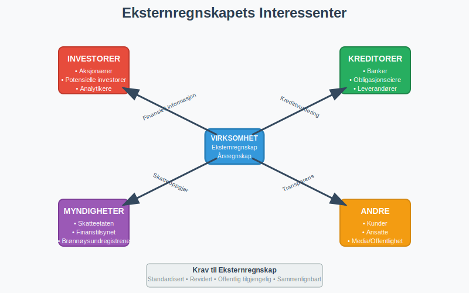
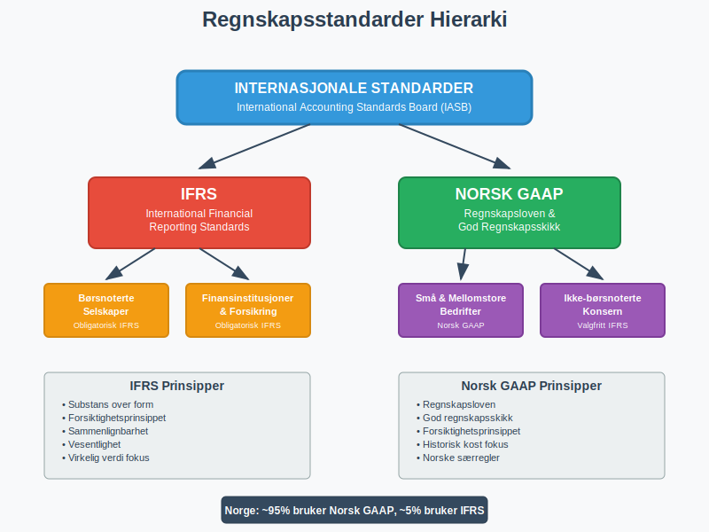
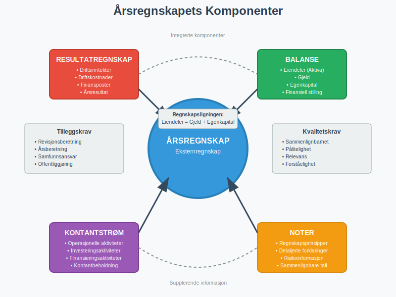
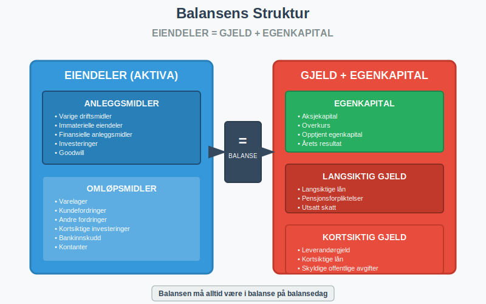
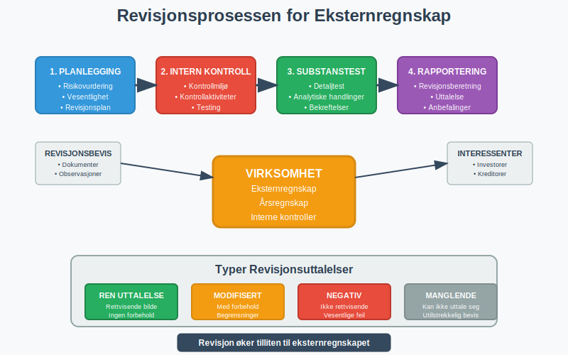
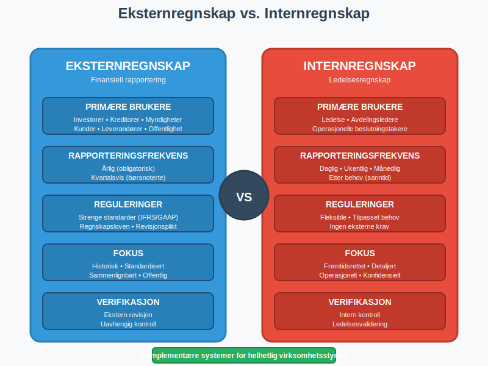
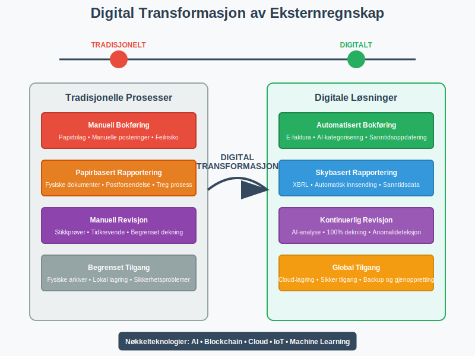

Eksternregnskap er finansiell rapportering som er utarbeidet primært for eksterne interessenter som investorer, kreditorer, myndigheter, kunder og leverandører. Dette står i motsetning til internregnskap, som er rettet mot ledelsen og interne beslutningstagere. Eksternregnskapet følger strenge regnskapsstandarder og lovkrav for å sikre transparens, sammenlignbarhet og pålitelighet i finansiell rapportering.
Seksjon 1: Grunnleggende om Eksternregnskap
Eksternregnskap er fundamentet for finansiell kommunikasjon mellom virksomheter og deres eksterne interessenter. Det gir et standardisert og regulert bilde av virksomhetens økonomiske stilling og resultater.

1.1 Definisjon og Formål
Eksternregnskap kan defineres som:
Et systematisk og regulert system for registrering, måling og kommunikasjon av finansiell informasjon til eksterne brukere for å støtte deres økonomiske beslutninger.
Hovedformålene med eksternregnskap inkluderer:
- Informasjonsformidling: Gi relevant og pålitelig finansiell informasjon
- Ansvarlighet: Vise hvordan ledelsen har forvaltet virksomhetens ressurser
- Beslutningsstøtte: Hjelpe eksterne brukere med investeringsbeslutninger
- Regulatorisk overholdelse: Oppfylle lovkrav og regnskapsstandarder
1.2 Hovedkarakteristika ved Eksternregnskap
| Karakteristikk | Beskrivelse | Betydning |
|---|---|---|
| Standardisert | Følger IFRS/GAAP standarder | Sikrer sammenlignbarhet |
| Historisk | Basert på faktiske transaksjoner | Gir objektiv informasjon |
| Periodisk | Rapporteres kvartalsvis/årlig | Strukturert rapportering |
| Revidert | Undergår ekstern revisjon | Øker troverdighet |
| Offentlig | Tilgjengelig for alle interessenter | Sikrer transparens |
Seksjon 2: Regnskapsstandarder og Rammeverk
Eksternregnskap er strengt regulert gjennom internasjonale og nasjonale regnskapsstandarder som sikrer konsistens og sammenlignbarhet på tvers av virksomheter og land.

2.1 Internasjonale Regnskapsstandarder
IFRS (International Financial Reporting Standards)
IFRS er den dominerende globale standarden for finansiell rapportering, utviklet av International Accounting Standards Board (IASB). I Norge er IFRS obligatorisk for:
- Børsnoterte selskaper
- Finansinstitusjoner
- Forsikringsselskaper
- Store konsern (frivillig)
Sentrale IFRS-prinsipper:
- Substans over form: Økonomisk realitet prioriteres over juridisk form
- Forsiktighetsprinsippet: Konservativ tilnærming til usikkerhet
- Sammenlignbarhet: Konsistent anvendelse over tid og mellom enheter
- Vesentlighet: Fokus på informasjon som påvirker beslutninger
2.2 Norske Regnskapsstandarder
For virksomheter som ikke følger IFRS, gjelder Regnskapsloven og God regnskapsskikk (GRS). Dette omfatter de fleste små og mellomstore bedrifter i Norge.
Regnskapsloven setter krav til:
- Bokføringsplikt for alle virksomheter
- Årsregnskapets innhold og struktur
- Revisjonsplikt for større virksomheter
- Offentliggjøring av årsregnskap
For en dyptgående forståelse av det norske regnskapsrammeverket, se vår guide til bokføringsloven.
Seksjon 3: Årsregnskapets Komponenter
Årsregnskapet er kjernen i eksternregnskapet og består av flere integrerte komponenter som sammen gir et helhetlig bilde av virksomhetens økonomiske situasjon.

3.1 Resultatregnskap
Resultatregnskapet viser virksomhetens inntekter, kostnader og resultat for regnskapsperioden. Det følger en standardisert struktur:
| Post | Beskrivelse | Formål |
|---|---|---|
| Driftsinntekter | Inntekter fra kjernevirksomhet | Vise operasjonell ytelse |
| Driftskostnader | Kostnader knyttet til drift | Måle operasjonell effektivitet |
| Driftsresultat | Resultat fra kjernevirksomhet | Indikere lønnsomhet |
| Finansposter | Renter, utbytte, valutagevinst/-tap | Vise finansiell påvirkning |
| Skattekostnad | Beregnet skatt på årets resultat | Vise skattemessig belastning |
| Årsresultat | Netto resultat etter skatt | Måle total lønnsomhet |
For en detaljert forklaring av driftsregnskapet, se vår artikkel om driftsregnskap.
3.2 Balanse
Balansen viser virksomhetens finansielle stilling på et bestemt tidspunkt og følger den grunnleggende regnskapsligningen:
Eiendeler = Gjeld + Egenkapital

Eiendeler (Aktiva)
- Anleggsmidler: Langsiktige investeringer som anleggsmidler
- Omløpsmidler: Kortsiktige eiendeler som kontanter, kundefordringer og varelager
Gjeld og Egenkapital (Passiva)
- Langsiktig gjeld: Forpliktelser med forfallstid over ett år
- Kortsiktig gjeld: Forpliktelser med forfallstid innen ett år
- Egenkapital: Eiernes andel av virksomheten
For en grundig forståelse av balansens oppbygging, se vår guide til balanse.
3.3 Kontantstrømoppstilling
Kontantstrømoppstillingen viser hvordan kontanter strømmer inn og ut av virksomheten, kategorisert i tre hovedområder:
-
Kontantstrøm fra operasjonelle aktiviteter
- Kontantstrøm fra kjernevirksomheten
- Justert for endringer i arbeidskapital
-
Kontantstrøm fra investeringsaktiviteter
- Kjøp og salg av anleggsmidler
- Investeringer i andre virksomheter
-
Kontantstrøm fra finansieringsaktiviteter
- Låneopptak og nedbetaling
- Egenkapitaltransaksjoner og utbytte
3.4 Noter til Regnskapet
Notene er en integrert del av årsregnskapet og gir:
- Detaljerte forklaringer til regnskapstall
- Informasjon om regnskapsprinsipper
- Tilleggsopplysninger om risiko og usikkerhet
- Sammenlignbare tall fra foregående år
Seksjon 4: Revisjonsplikt og Kvalitetssikring
Revisjon er en kritisk komponent i eksternregnskapet som sikrer troverdighet og pålitelighet i finansiell rapportering.

4.1 Revisjonsplikt i Norge
Revisjonsplikt gjelder for virksomheter som oppfyller to av tre følgende kriterier:
| Kriterium | Grenseverdi |
|---|---|
| Salgsinntekt | Over 70 millioner kroner |
| Balansesum | Over 35 millioner kroner |
| Gjennomsnittlig antall ansatte | Over 50 årsverk |
4.2 Revisjonsberetningen
Revisjonsberetningen er revisors konklusjon og inneholder:
- Uttalelse om årsregnskapet: Ren, modifisert eller negativ uttalelse
- Uttalelse om forvaltning: Vurdering av ledelsens forvaltning
- Øvrige opplysninger: Tilleggskommentarer og anbefalinger
4.3 Intern Kontroll og Kvalitetssikring
Virksomheter må etablere interne kontrollsystemer for å sikre:
- Korrekt regnskapsføring og bilagsbehandling
- Forebygging av feil og misligheter
- Overholdelse av lover og forskrifter
- Effektiv avstemming av regnskapsdata
Seksjon 5: Eksternregnskap vs. Internregnskap
Forståelsen av forskjellene mellom eksternregnskap og internregnskap er avgjørende for å forstå deres respektive roller i virksomhetsstyring.

5.1 Sammenligning av Hovedkarakteristika
| Aspekt | Eksternregnskap | Internregnskap |
|---|---|---|
| Primære brukere | Investorer, kreditorer, myndigheter | Ledelse, avdelingsledere |
| Rapporteringsfrekvens | Årlig, kvartalsvis | Daglig, ukentlig, månedlig |
| Reguleringer | Strenge standarder (IFRS/GAAP) | Fleksible, tilpasset behov |
| Tidshorisont | Historisk fokus | Fremtidsrettet |
| Detaljeringsnivå | Aggregert, høyt nivå | Detaljert, operasjonelt |
| Verifikasjon | Ekstern revisjon | Intern kontroll |
5.2 Komplementære Roller
Selv om ekstern- og internregnskap har forskjellige formål, komplementerer de hverandre:
- Eksternregnskap gir det regulatoriske rammeverket og tillitsgrunnlaget
- Internregnskap gir detaljert styringsinformasjon for operasjonelle beslutninger
- Begge bidrar til helhetlig virksomhetsstyring og strategisk planlegging
For en dyptgående forståelse av internregnskap og hvordan det skiller seg fra eksternregnskap, se vår omfattende guide til internregnskap.
Seksjon 6: Digitalisering og Fremtidige Trender
Digitalisering transformerer eksternregnskapet gjennom automatisering, kunstig intelligens og sanntidsrapportering.

6.1 Teknologiske Innovasjoner
Automatisert Bokføring
- Elektronisk fakturering som e-faktura
- Automatisk bilagsregistrering
- Integrerte ERP-systemer
Kunstig Intelligens og Maskinlæring
- Automatisk kategorisering av transaksjoner
- Anomalideteksjon for kvalitetskontroll
- Prediktiv analyse for prognoser og budsjetter
6.2 Regulatoriske Endringer
XBRL og Strukturert Rapportering
XBRL (eXtensible Business Reporting Language) standardiserer finansiell rapportering:
- Maskinlesbar finansiell informasjon
- Automatisert datavalidering
- Forbedret sammenlignbarhet
Sanntidsrapportering
Fremtidige krav kan inkludere:
- Kontinuerlig revisjon gjennom automatiserte kontroller
- Sanntids finansiell rapportering til myndigheter
- Blockchain-basert regnskapsføring for økt transparens
Seksjon 7: Praktiske Aspekter og Implementering
7.1 Etablering av Eksternregnskapssystem
For å etablere et effektivt eksternregnskapssystem må virksomheter:
-
Velge regnskapsstandarder
- Vurdere IFRS vs. norsk GAAP
- Konsultere med regnskapseksperter
-
Implementere kontrollsystemer
- Etablere bokføringsrutiner
- Sikre korrekt dokumentasjon
-
Velge teknologiløsninger
- Integrerte regnskapssystemer
- Automatiserte rapporteringsverktøy
7.2 Kvalitetssikring og Compliance
Månedlige Kontrollrutiner
- Kontoavstemming og bankavstemming
- Gjennomgang av periodiseringer og avsetninger
- Kontroll av mellomregninger og kundefordringer
Årlige Prosedyrer
- Forberedelse til ekstern revisjon
- Utarbeidelse av årsregnskap og noter
- Offentliggjøring i henhold til lovkrav
Seksjon 8: Utfordringer og Beste Praksis
8.1 Vanlige Utfordringer
Kompleksitet i Regnskapsstandarder
- Tolkningsutfordringer ved nye standarder
- Implementeringskostnader for systemendringer
- Kompetansekrav for regnskapspersonell
Teknologiske Utfordringer
- Systemintegrasjon mellom ulike plattformer
- Datasikkerhet og personvern
- Endringsledelse ved digitalisering
8.2 Beste Praksis for Eksternregnskap
-
Proaktiv standardoppfølging
- Følg med på endringer i regnskapsstandarder
- Delta i faglige nettverk og kurs
-
Robust intern kontroll
- Implementer fire-øyne-prinsippet
- Etabler klare ansvarslinjer og godkjennelsesnivåer
-
Kontinuerlig forbedring
- Gjennomfør regelmessige prosessevalueringer
- Invester i kompetanseutvikling
-
Stakeholder-kommunikasjon
- Oppretthold åpen dialog med revisorer
- Gi tydelig informasjon til eksterne interessenter
Konklusjon
Eksternregnskap er fundamentet for finansiell transparens og tillit i næringslivet. Det sikrer at eksterne interessenter får pålitelig og sammenlignbar informasjon om virksomheters økonomiske stilling og resultater. Gjennom strenge regnskapsstandarder, revisjonsplikt og kvalitetssikring bidrar eksternregnskapet til:
- Effektive kapitalmarkeder gjennom bedre informasjonsgrunnlag
- Økt tillit mellom virksomheter og deres interessenter
- Bedre beslutningsgrunnlag for investorer og kreditorer
- Regulatorisk compliance og samfunnsansvar
I en stadig mer digitalisert verden vil eksternregnskapet fortsette å utvikle seg, med økt fokus på sanntidsrapportering, automatisering og forbedret datakvalitet. Virksomheter som investerer i moderne regnskapssystemer og kompetanse vil være best posisjonert for fremtidens krav til finansiell rapportering.
For virksomheter som ønsker å etablere eller forbedre sitt eksternregnskapssystem, er det avgjørende å forstå både de regulatoriske kravene og de praktiske aspektene ved implementering. Ved å følge beste praksis og investere i riktig teknologi og kompetanse, kan eksternregnskapet bli en strategisk ressurs som skaper verdi for alle interessenter.